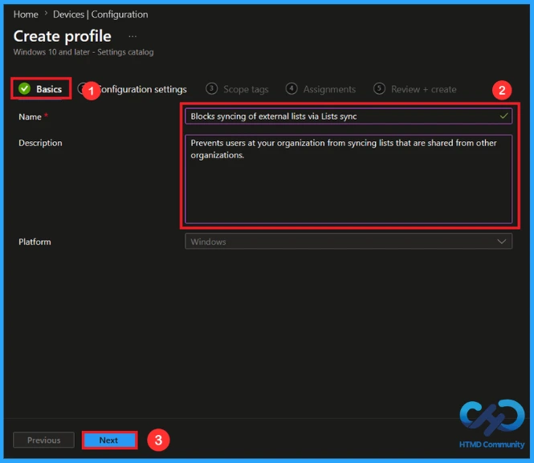
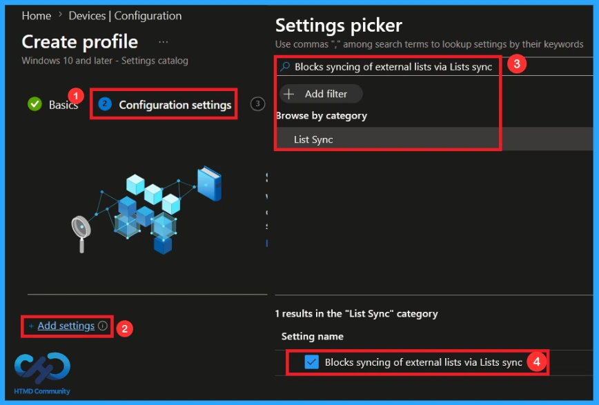
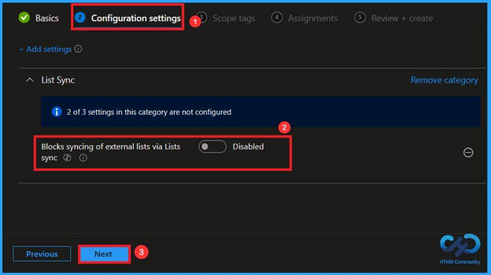
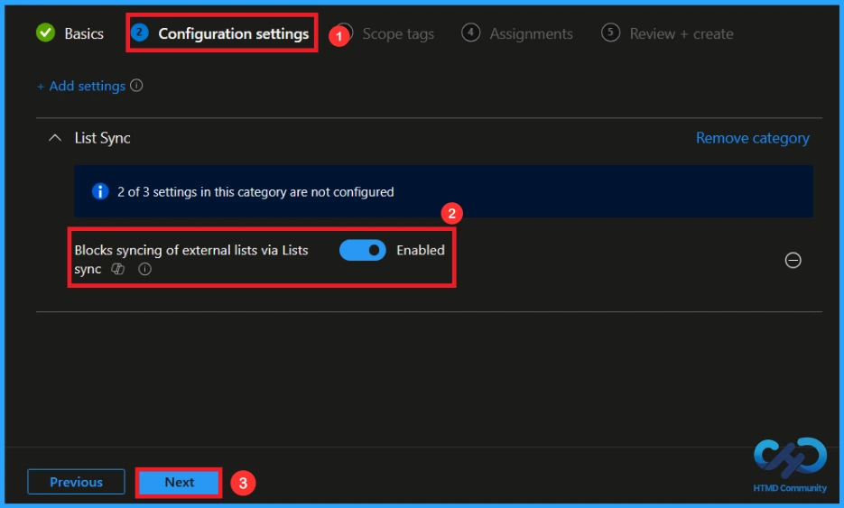
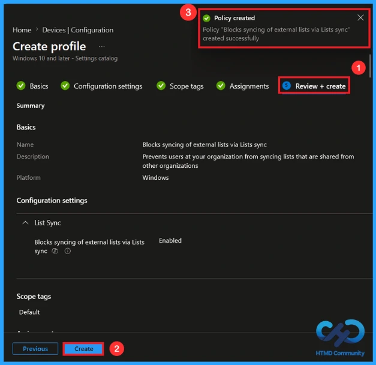
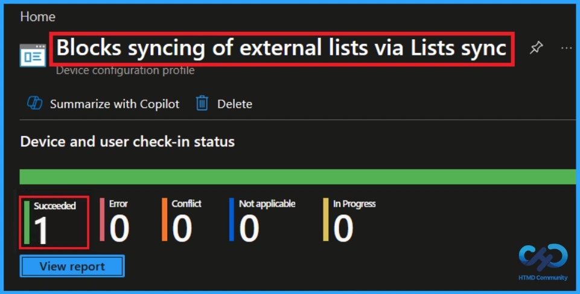
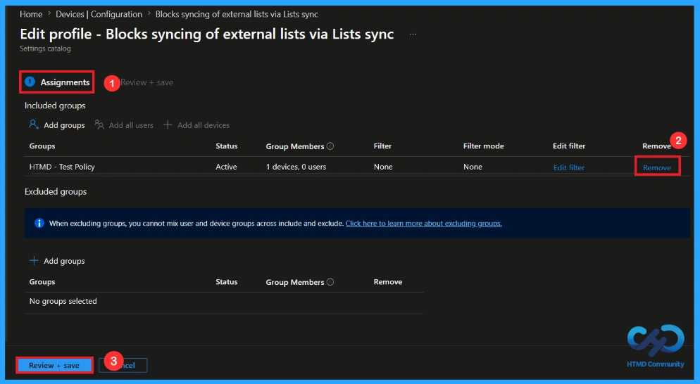
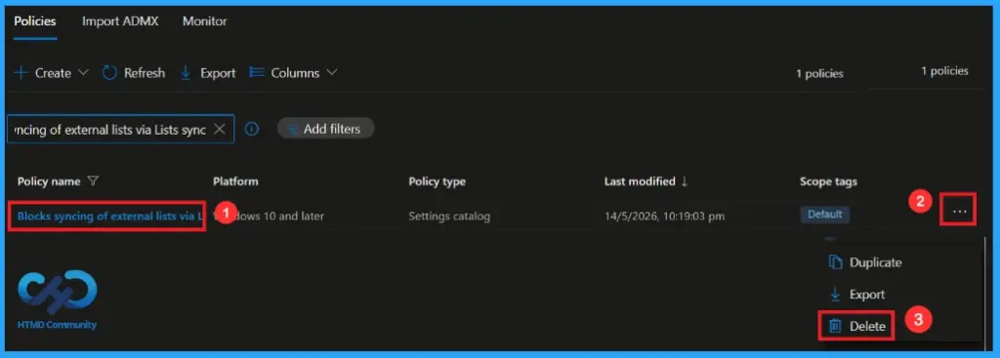

Key Takeaways
- Blocks the synchronisation of external lists to managed devices
- Helps improve organisational data security
- Reduces accidental data exposure from shared lists
- Provides better control over synced enterprise content
- Useful for compliance and restricted environments
Hey, let’s discuss about how to block syncing of external list via lists sync using Intune. This policy helps to check whether users at your organisation able to sync the external list. This prevents users at your organisation from syncing lists that are shared from other organisations. This policy enhances security by blocking the synchronization of external lists to devices.
Table of Contents
What are the Advantages of this Policy?
This policy prevents users from syncing Microsoft Lists shared from external organisations. It helps organisations control external data access and improve data security.
1. Enhances protection of organisational data.
2. Prevents syncing of external shared lists.
3. Improves control over enterprise content.
How to Block Syncing of External List Via Lists Sync using Intune
This policy helps to restrict syncing of the external list when enabled. This helps maintain better security and control over organisational data access.
How to Create a Policy
First, sign in to the Microsoft Intune Admin Center. Go to the Devices and select Configuration. Then click on the create down arrow, and after that, click on New Policy.

Profile Creation in a Policy
This is the next step you need to take for policy Creation. In profile creation, you must select the platform and profile type. Here, I would like to configure the policy for Windows 10 and later platforms and the settings catalog profile. Then click on the Create button

Basics Tab for Name and Description
On the Basics Tab, give an appropriate Name and Description, so that it is easy to identify later. In the name box, give the policy a suitable name. Here I gave it as block syncing of external list via lists sync. Giving a description is not mandatory. Then click Next to continue.

Configuration settings in this policy
On the Configuration Settings Tab, after clicking on the Add Settings, you can search for the name of the policy from the settings picker. In the search bar, enter the policy name and select the Category list sync and enable the setting name.

Disabling this Policy
Disabling this policy allows users in your organization to sync Microsoft Lists or SharePoint lists that are shared from other organizations. External lists can then be accessed and edited offline through the Lists Sync feature. If you like to create the policy by disabling then click on Next to continue.

Enabling this Policy
Enabling this setting prevents users at your organisation from syncing lists that are shared from other organisations. After the setting is enabled (value 1) on a computer, lists shared from other organisations won’t sync. Disable the setting (value 0) to allow your users to sync external lists. Then click on Next.

A scope tag in Intune is used to control visibility and access to Intune resources based on administrative roles. Here, I would like to skip this step because Scope tags are not mandatory. You can add the scope tag if you want using the select scope tags button. Click Next to continue.

Assignments Tab to Add Group
On the assignments tab, you can select which users or devices get this policy. Under Include Groups, click Add Groups. From the list, select the group that you want to target. Here, I selected HTMD – Test Policy. Then click the Next button to continue.

Review + Create
At the Review + Create step, you can review each tab to avoid misconfiguration or policy failure. Basically, this section provides an overview of the policy configuration. After reviewing the details and making any necessary changes by clicking Previous. We click Create to finish. Then a notification will pop up and confirms that your policy has been created successfully.

Monitoring the Status of the Policy
You can check a policy’s status in the Intune portal. Generally, it takes 8 hours for policies to be created. By using the manual sync option, you can reduce the configuration delay in the company portal app on the device, then check the status again. Navigate to Devices > Configuration. Click on the specific policy to see its details.

How to Remove an Assigned Group from this Policy
If you need to remove a group from a policy assignment for security updates. Open the policy from the configuration tab and click on the edit button. Then, click on the Remove button. Click Review + Save after making the changes
For detailed information, you can refer to our previous post – Learn How to Delete or Remove App Assignment from Intune using by Step-by-Step Guide.

How to Delete this Policy from Intune Portal
If you want to delete this policy for any reason, you can do it easily. First, search for the policy name in the configuration section. When you find the policy name, swipe to the left and click the 3-dot menu next to it and tap the Delete option. Then your policy will be deleted.
For detailed information, you can refer to our previous post – How to Delete Allow Clipboard History Policy in Intune Step by Step Guide.

Need Further Assistance or Have Technical Questions?
Join the LinkedIn Page and Telegram group to get the latest step-by-step guides and news updates. Join our Meetup Page to participate in User group meetings. Also, Join the WhatsApp Community and WhatsApp Channel to get the latest news on Microsoft Technologies. We are there on Reddit as well.
Author
Anoop C Nair has been Microsoft MVP from 2015 onwards for 10 consecutive years! He is a Workplace Solution Architect with more than 22+ years of experience in Workplace technologies. He is also a Blogger, Speaker, and Local User Group Community leader. His primary focus is on Device Management technologies like SCCM and Intune. He writes about technologies like Intune, SCCM, Windows, Cloud PC, Windows, Entra, Microsoft Security, Career, etc.